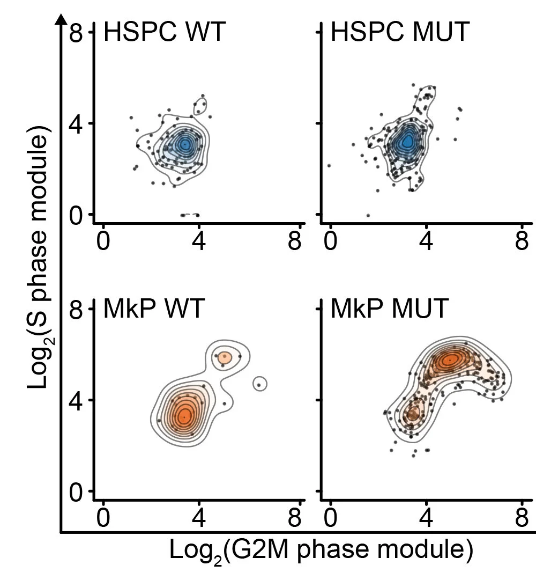

Somatic mutations & cell identity.
We identified that the effects of somatic mutations vary as a function of cell identity in myeloid neoplasms (Nam, Kim, Chaligne, et al, Nature, 2019). We seek to understand the cell identity-defining mechanisms that cause the variabilities in the impact of somatic mutations and interactions with the microenvironment.